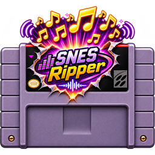

SNES AUDIO RIPPER00:00
STOP
CHOOSE A FORMAT, THEN OPEN A ROM
*** DROP YOUR SNES GAME HERE *** .SFC .SMC .ZIP AND SPLIT FILES SUPPORTED ***
MP3 · compact audio files
DROP YOUR SNES GAME HEREROM or ZIP · click to browse

SNES AUDIO RIPPER